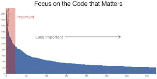

A Journey to be a Digital Company - tangly llc
A Journey to be a Digital Company - tangly llc
I long dreamed to work in a digital environment. I shall no longer print out a form, sign it by hand and use snake mail to deliver it to the receiving party. All company documents are stored electronically. I can search any artifacts by content and get a list of its in seconds.
Our software service company is an ideal candidate to validate if this assumption is realistic.
Profit is like the air we breathe. We need air to live, but we don’t live to breathe.
What is Digital Working?
You shall use digital tools and workflows to perform all your work related tasks. We want to increase interactions with our coworkers and remove any tedious activities.
-
Fax is dead. You do not need faxes in Europe - no more waiting at the fax machine,
-
You send your contracts electronically. You can sign them electronically - no more printing or paper archiving,
-
You send invoices electronically - no more printing,
-
You perform your accounting electronically and avoid any paper archive,
-
You coordinate with your team members with chat tools; not over the phone or with emails. N o more answering long emails with huge cc list and less business travel,
-
Any document can collaboratively be edited online by multiple collaborators working distributively. No more calls to find the latest version of a document or to remind somebody to unlock the document. Or worse finding out why your changes just disappeared,
-
Any collaborator has access to all our assets. You monitor all software continuous integration and delivery pipelines from anywhere if authorized. The information is available with a regular notebook or on any mobile device.
And you have a positive impact on the environment. Less traveling, less paper and less shipping. Embrace the digital age and be environment aware.
All Activities and Processes are Digitized
Internal Tools
At tangly we use internally
-
Google Business Apps and LibreOffice for office work, email, calendar, video conference and document sharing. All documents are stored in our product or company online drives,
-
Google Business Apps administration console to manage our technical infrastructure such as workstations, mobile devices, DNS record,
-
Bitbucket and continuous integration, delivery and deployment pipelines for software development,
-
Trello for activities management and our electronic Scrum or Kanban board. We use analog boards if the team members are collocated - we are trying to avoid JIRA. It would be just overkill for us -,
-
Slack is our preferred chat platform,
-
Banana is our accounting solution.
We never had to bought or rent a printer, a landline or a fax machine since founding the company.
External Tools
We use an impressive set of tools to collaborate with our customers and partners
-
Google email, calendar and meetup for communication,
-
Bitbucket and continuous integration, delivery and deployment pipelines for software development,
-
Maven Central to distribute public binary software artifacts,
-
Slack is our preferred chat platform,
-
Google Groups for technical discussion,
-
Blogger to publish articles to our community,
-
LinkedIn for marketing,
-
GPG and S/MIME to securely exchange confidential documentation or protect sensitive emails.
An impressive set of processes with governmental organizations can now be performed electronically in Switzerland
-
VAT authority support declaration and payment electronically,
-
Company register in Switzerland give access to all registered companies,
-
Salary declarations and forms are generated electronically through government online tools,
-
Swiss post office support package tracking and delivery rescheduling online,
-
Swiss social insurances - pension fund, children allowance, military service, unemployment insurance - declaration and mutation are available online,
-
Taxes declaration can be performed with a downloadable government application,
-
Public transportation company tickets can be bought online and delivered electronically on collaborator’s mobile device.
What is Working?
-
We perform marketing and sales through online platforms and avoid any physical ads platform,
-
We communicate through our company online platform. We never use physical documents and minimize email usage,
-
We deliver all contractual documents electronically,
-
We deliver all invoices electronically,
-
We have our library and technical documentation as static websites, wikis, and electronic documents. We do not possess any paper books,
-
Our archive is online. We do not possess a physical archive of documents or contractual documents and never bought or rented physical space for this purpose,
-
We never did own or rent any printer, land phone line or fax machine. The quality and speed of our Internet connect improve yearly. It is already above our keenest expectations.
What is NOT Working?
Surprisingly most of the processes with private companies providing mandatory services cannot be done electronically due to obsolete information systems and cumbersome processes.
-
Accident insurance (BU and NBU) still request declaration of incidents and communication over paper mail,
-
Pension fund insurance company provides a web portal but still send some forms over paper mail,
-
Tax declaration must still be printed out and sent to the tax office of the state government.
None of the government solutions provide modern API. We still must manually input our data in their portals. The old interfaces they provide are only partially available through expensive commercial solutions. By old interfaces we mean proprietary formats and proprietary file transfer solutions.
Findings
The last four years were a game changer. A lot of manual activities are now fully digitized and often automatized. We never had to buy a printer. The last year we seldom had to scan a paper document.
The partners still requesting paper interactions are some government agencies and some insurances. We observe a decrease of such physical interactions. Our partners are steadily - if sometimes slowly - digitizing their workflows.
Slowly digital versions for invoices are emerging. This approach should allow automated payment workflows. Interestingly private customers already have billing and e-payment solutions. Similar solutions for corporate customers are either not available or incredibly limited, cumbersome and expensive.
The next big step will be the emergence of API to integrate the steps in a workflow specific to the involved companies. For example the technical part of the onboarding process for a new employee could be fully automated.
Agile @ Scale
Agile @ Scale
Your organization has decided to introduce agile at scale in all development departments or better in the whole company.
Your Chief of Agility COA, Chief of Digitalization COD or Chief of Change COC was in an expensive training. After a few drinks he has selected the appropriate framework for your company.
Welcome to the club of companies introducing agile approaches and having no clues why they do it and how they could be successful.
Here some hardly learnt truths worth knowing when starting such an endeavor.
Imposing Agile methods introduces a conflict with the values and principles that underlie Agile methods.
Know Popular Scaling Approaches
The scaling approaches I encounter at customer sites in Switzerland and Europe are
-
Spotify Model was popularized by Henrik Kniberg. His YouTube videos are worth watching. The banking group ING adopted the approach and made it fashionable.
-
Scrum@Scale defined by Jeff Sutherland and Scrum Alliance. Henrik Kniberg has written an interesting article stating Spotify Model is a kind of Scrum@Scale.
-
Nexus defined by Ken Schwaber and Scrum.org [1].
-
LeSS defined by Craig Larman and Bas Vodde. It is also supported by Scrum Alliance [2, 3, 4].
-
SAFe 5.0 defined by the RUP aficionados and often trashed by Kniberg, Sutherland, Schwaber, Larmann and Vodde. At the same it is the most popular approach in quite a few countries. And I would never state it is the most successful.
Additional approaches exist but I did not encounter them lately.
Delay Scaling
The key learning is
Delay your Scaling. First Lean the ropes. Try to descale your processes.
Learn the ropes with small agile teams applying Scrum, Kanban, eXtreme Programming or our own approach. Learn as much as you can through experiments before considering scaling. The invested capital in small experiments with small teams is tremendously cheaper than experimenting with company-wide approaches.
Be gentle and kind to your professional teams. Scale once your agile teams are seasoned.
It takes time to learn and master Scrum and Kanban approaches.
Recognize that organizational agility is constrained by technical agility. Focus the first years on technical excellence, software craftsmanship and clean development.
All the above-mentioned methods emphasize the importance of technical excellence for durable success.
Simplify your processes, roles and structures. Reflect if you really need scaling.
Now you are ready to experiment with scaling.
Understand the Principles of Scaling
-
Create a learning organization. It is the building block for agile approaches
-
Train your collaborators.
-
Experiment with new approaches and measure success.
-
-
Organize around up to eight teams, one backlog for one product.
-
Avoid team backlogs.
-
Have one product owner in charge of the whole product.
-
-
Pull, do not push.
-
Collaborators and teams select workload.
-
All information are available to all collaborators.
-
-
DevOps is king.
-
Automate aggressively.
-
Put all artifacts under version control.
-
-
Focus on outcomes and impact, not on outputs.
-
Customer features are product only when used by users.
-
Velocity and burn-down charts are output.
-
Avoid Common Errors
Study the history and evolution of the various scaling approaches. In particular the changes in SAFe are an archaeological treasury what they wrongly stated and how they corrected some identified flaws.
-
Continuous delivery is the new approach. Eliminate hardening iterations, integration phases, milestones when software should be integrated. Your teams shall deliver a workable software on demand, multiple times a week or a day.
-
Organize around products. Customers buy products. Eliminate product based organizations. *b Have one backlog for the whole product. Multiple backlogs must be otherwise synchronized and local optimization is de facto applied. This approach is against all lean principles.
-
Customer and users talks directly with the development team. Product owners, product managers enterprise architects should never be filtering the information flow between customers and engineers.
-
Eliminate step by step all coordination roles. Emphasize communication between developers in the team and between teams. Scrum of Scrums where only Scrum masters attend, Release Train Engineer, System teams, corporate Solution Engineers are just a waste of resources.
-
Realize technical excellence is the only approach to deliver quality products to the customer. Raise the importance of technical excellence, and never forget that when writing software, the technology side is really vital.
Final Words
Establish agile teams. Thin your process. Chose your scaling approach. Try it and measure impact. Iterate and improve continuously. Therefore, it could be necessary to change your initial scaling approach and adapt it to your company needs.
I wish you successful scaling of agile approaches. And I have to warn you the path to success is long and risky. Personally I had some successes with Large Scale Scrum - LeSS.
References
[1] K. Bittner, The Nexus framework for scaling scrum. 2018 [Online]. Available: https://www.amazon.com/dp/0134682661
[2] C. Larman, Scaling lean & agile development. Addison-Wesley, 2008 [Online]. Available: https://www.amazon.com/dp/0321480961
[3] C. Larman, Large-scale scrum. 2017 [Online]. Available: https://www.amazon.com/dp/0321985710
[4] C. Larman, Practices for scaling lean & agile development. Addison-Wesley, 2010 [Online]. Available: https://www.amazon.com/dp/0321636406
Time to Migrate to a Modern JDK, Laggards!
Time to Migrate to a Modern JDK, Laggards!
Are you still using Java 8 to run your mission critical systems?
Are you truly using a six years old technology stack?
Are you already applying for a Java laggard club membership?
If you are still using Java 8 you are using technologies released in Spring 2014. You are missing all the improvements in the garbage collector, runtime engine and various API.
Java 11 LTS was released in September 2018. The current LTS release is one year old. You had one year to migrate to this long term solution version.
It is time to modernize the fundament of your application and invest a small amount of effort in it. The payback is fantastic.
Advantages
-
You have economical gains through
-
Major performance improvements make your application faster. You have either higher customer satisfaction or need less processing resources,
-
Major garbage collector updates make your application more predictable. The maximum amount of memory is often lower,
-
Better behavior in container environment translates to less resource usage,
-
-
You have more legible and maintainable source code
-
Since Java 8 useful new language features have been introduced, along with new tooling,
-
Various standard API were extended with convenience methods,
-
One important change was that internal APIs - largely those classes in packages that started with sun.misc.* - were hidden from use,
-
APIs that are not core to the JDK have also been removed in Java 11 or later. These changes may impact your application but there is a clear path to avoid these problems.
-
-
You have to select either the long term support path or upgrade every six months the Java runtime
-
When upgrading the choice you face is whether to use the latest version of Java, currently 13 and be prepared to upgrade every six months. Or upgrade to the latest LTS 11 to give yourself up to three years to think about your next upgrade,
-
Don’t be tempted to ignore compiler warnings. Deprecation is being taken much more seriously in this modern Java world, and both Java 10 and Java 11 removed APIs.
-
In less than two years the next LTS will be released with Java 17. It is scheduled in September 2021.
-
-
Become more agile
-
Once over this first upgrade, it is worth at least testing the application on the latest version of Java every 6 months, for example in CI.
-
In all cases openJDK is now the new default. Various companies - Oracle, Redhat, Amazon, Azul, IBM - provide commercial support for openJDK for different timelines. You are more flexible with your migration timeline.
-
How to Migrate?
You do not need to implement Java modules to migrate to Java 9 or beyond. It is worth the effort to slowly support the module approach. Your architecture will become more modular and the interfaces are more clearly defined.
There are basically four incremental phases to fully migrate to Java 11 or later:
-
Run an existing Java application with the JDK,
-
Compile the application with the JDK,
-
Use the new features of the current JDK,
-
Modularize the application to use module system.
You could recompile and run your solution with the new Java version without code changes.
Changes are necessary if you use deprecated packages or access Sun internal packages. All deprecated packages have a compatible alternate implementation. Often you just need to update the import statements. Sun packages have a documented migration path to alternate approaches providing similar functionality. By the way Sun company already stated years ago you should not use these internal packages. So it is time to clean up your code.
Call for Action
Start now your migration to a modern JDK and leave Java 8 behind you.
Anyway you can only tinker with the date, you will have to migrate at some point.
A Commons View on Scrum
A Commons View on Scrum
Agile approaches encourage common ownership of artifacts during product development. Historically, the commons is the term used for shared resources. Can we apply the commons learnings to agile and Scrum approaches?
Interestingly, economists were kind to state common ownership is doomed to fail through the theory published end of the sixties [1].
Thirty years later, Elinor Ostrom showed that commons can indeed work well if you follow a small set of rules. She found century-old examples scattered around the world. She was awarded the Nobel Prize in economics for her findings in 2009 and dissipated the previous fake news.
The picture shows a Suone in Wallis, Switzerland. The constructions bring water to arid regions and are build and maintained by communities. It is an example of commons in place for hundreds of years and is one of the concrete implementation studied by Elinor. Mountain pastures are also managed as commons in Switzerland. You will find a drawing of Suone on the hundred Swiss Francs note.
{kind=link}
A resource arrangement that works in practice can work in theory.
Elinor Ostrom identified eight design principles of stable local common pool resource management through the world. These principles have a wider range of applications than common resource pool groups. They are relevant to nearly any situation where people - such as Scrum teams - must cooperate and coordinate to achieve shared goals.
Below the eight principles are presented with a mapping to Scrum aspects.
A clear definition of the contents of the common pool resource and effective exclusion of external un-entitled parties
The Scrum teams define the artifacts and processes exclusively owned by the team. Teams take ownership of items such as source code, Scrum board, pull process. Other items, such as refactoring process, incident tickets produce more infighting. You can measure the maturity of your team accordingly to the clarity which resources they own exclusively. The first step shall often be collective ownership of source code and common coding style.
The appropriation and provision of common resources that are adapted to local conditions
Agile teams own commons resources such as * Collective ownership of source code, * Definition of Done DoD, * Sprint Backlog, * Coding Guidelines, * Team rules and work techniques.
The work techniques often limit common resources in inexperienced teams. They ask the product owner if they could refactor a class or invest a few minutes in clean code techniques. They do not own the internal quality of the product. More mature teams are able to make the transition with the support of their Scrum master and the organization. They truly own the source code and its quality.
Collective-choice arrangements that allow most resource appropriators to participate in the decision-making process
Scrum or LeSS have quite a few platforms to support decision-making process * Daily Scrum, * Retrospective, * Review, * Backlog refinement, * Planning.
The decision-making process works only if the organization grants psychological security to their teams. In my experience, it takes years until an organization discards command and control reflexes and delegates responsibility and accountability to the Scrum team members. Daily Scrum events are often reporting meetings. The developers report either to the Scrum master, or the product owner, or a manager. The events are seldom a platform to collaborate, discuss options and experiment with variants.
Consensus or consent approaches are widely more successful than majority decisions is one of the findings of Elinor.
Effective monitoring by monitors who are part of or accountable to the appropriators
You have to monitor your commons to know if they are healthy. You can
-
Pair program or review commits with pull requests,
-
Automate static metrics and test coverage,
-
Implement continuous integration, delivery and deployment,
-
Try zero bug policy.
I regularly state monitoring is the first commitment of team members to be publicly accountable. Often it is painful to realize how difficult transparency is.
A scale of graduated sanctions for resource appropriators who violate community rules
Rules are only respected if sanctions are implemented upon violations of the agreement. Scrum teams can rule that
-
You must repair the broken build.
-
You must immediately correct your coding violations.
-
You lose your source code management system check-in rights.
-
You are excluded from the team.
Most teams need counseling before they can tackle the concept of sanctions. As a Scrum master you must gently empower them to sanction. If this rule is not implemented, you will always land in the tragedy of commons and utterly fail in your agile journey. Worse, your product will probably also fail.
Mechanisms of conflict resolution that are cheap and of easy access
Conflict resolution shall be fast, cheap, and timely. Scrum provides excellent approaches
-
Automated checks on the source code and executable application,
-
Daily Scrum,
-
Review and retrospective.
The automatic checks are worth the effort as an effective, neutral, and cost-effective to detect violations and automatically block the offender. The Scrum events are platforms to discuss and resolve the discovered violations. The Scrum master must facilitate the discussion until the team members have developed their own conflict resolution instruments.
Self-determination of the community recognized by higher-level authorities
Self-determination works only if recognized by the overall authorities and organization. Here we leave the team level and need department recognition - for a LeSS approach - or company level recognition - for example to have ownership to remove a team member -.
-
Self-organizing of the Scrum team,
-
Ownership of internal quality,
-
Ownership of estimations.
Scrum master shall coach and counsel the organization and the team. It takes time until management understands the dependencies between delegation, accountability, ownership, and autonomy. You shall remember Larman’s Laws
Culture follows structure.
You will as a change agent change together with leaders the structure of your organization. Please be gentle and patient.
In the case of larger common-pool resources, organization isin the form of multiple layers of nested enterprises. Small local CPRs at the base level.
Scaling agile practices at the organization level requires multiple levels.
-
Transparency through Scrum board,
-
Definition of Dome as contract between a team and their organization,
-
Visibility of source code, continuous integration, delivery and deployment of artifacts,
-
Scale to product level using LeSS.
If you are ready to scale up to the company you could consider Beyond Budgeting Round Table. BBRT and Sociocracy approaches and tailor them to your specific needs.
I rediscovered the commons rules through a presentation of Craig Larmann at the LeSS conference 2019 in Munich. He inspired us to look at agile approaches through the commons' lens.
Links
-
[1] Tragedy of Commons or Self-Management. Ran Nyman. 2020
Agile Architecture within Scrum
Agile Architecture within Scrum
You are applying the agile, lean approach to your software product development. Your teams use Scrum or Kanban to deliver running software every two weeks.
Agile architecture is a key element to improve the quality of your solution and reduce overall cycle-time of your product delivery.
Your journey toward greater business agility starts by identifying what outcomes are most important to your company’s success. Outcomes are codified in functional and non-functional requirements your product shall fulfill. A key component is to find out how to create a great resilient architecture within the Scrum framework.
What Is Agile Architecture? An agile architecture shall have four characteristics.
-
Allow change quickly because we cannot foresee the future.
-
Always verifiable because we want changes without impeding integrity.
-
Support rapid development because we want effective and efficient implementation of new features.
-
Always working because we want continuous deployment to have customers' feedback -.
These characteristics are essential for successful agile development of great software products.
What Is The Scrum Approach?
Scrum and the Scrum Guide are silent how architecture activities are performed during sprints. We can use the Scrum values, the Scrum Guide and the Agile Manifesto Principles to infer approaches.
The architect shall be part of the Scrum development team. This is the most embedded way an architect would fit into a Scrum team. It may not even be an individual who has the title of an architect. The big idea behind Scrum teams is that team members have different skills. Their roles may change to deliver what is required for a particular sprint.
So it could be that senior developers within the team got architecture skills. They are in the best position, or have the best knowledge, to make those architectural decisions. Those team members with architectural skills are involved in the sprint on a day-to-day basis. They attend the daily Scrum meetings, take items off the backlog, and work on them.
Interestingly LeSS is more opinionated and describe Successful Approaches for agile architecture and design.
How Do You Perform Agile Design?
Scrum is quite silent about technical practices. The Scrum fathers and community strongly emphasize adopting eXtreme Programming practices. For bigger systems use the good practices described in LeSS.
An actual very good practice is to use Event Storming and Domain Driven Design DDD to model the application domain and partition the system.
Use fitness functions to monitor and validate all non-functional requirements.
The well-established practices from the object-oriented and DevOps communities are:
-
Develop very early a working skeleton.
-
Clean architecture implies clean code and requires clean coders in your team. See our post Clean Code,
-
Aggressive refactoring and understand technical debt, Continuous integration, continuous delivery, and continuous deployment.
For a detailed discussion, consult the post Pragmatic Craftsmanship.
What is the Architect Role?
The architect shall
-
Be part of the team, work daily with team members and attend all team events.
-
Maintain the pace of development.
-
Often Communicate and early as a coach and mentor - meaning pair programming and design sessions -.
-
Be fluent in domain-driven development, hexagonal architecture, refactoring, and clean code.
-
Use architecture design record ADR and light documentation to describe architecture decisions - meaning no lengthy Software Architecture Document SAD or overwhelming UML models -.
-
Be a master programmer and writes code in the application technological stack. He writes actual source code as current good practices are.
-
Have rich knowledge of architecture and design.
We have mentioned refactoring, which is how we evolve an ever-improving design and architecture while building the product incrementally. To do that, we need to know the difference between good architecture and design and not-so-good. We need a rich pool of architecture and design options in our bag of tricks, ranging from very simple options to the more complex and rich options that we may need as the system grows. One never knows too much about the quality of architecture, code, and design. One does, of course, need to apply that knowledge smoothly, incrementally, little by little.
Agile Architecture Series
The agile architecture track contains the following blogs
We also published our agile architecture course (3 ECTS) used for teaching computer science students at bachelor level at Swiss technical universities.
The World is a Better Place and We Must Tackle Climate Change
The World is a Better Place and We Must Tackle Climate Change
The world has really improved in a lot of areas.
Stop whining we are doomed. And yes we must act strong and fast to tackle the climate change disaster.
Do not forget how much the world bettered the last centuries.
We are not doomed, we must solve the next challenges instead of just complaining and doing nothing.
-
Ask yourself if you need a car.
-
Travel by train instead of flying.
-
Schedule a video conference instead of a business trip.
-
Reduce your plastic and paper usage.
-
Each step reduces your carbon footprint.
Millions of persons taking similar steps will be a huge improvement. Just do it!
The late Swedish academic Hans Rosling has identified a worrying trend. Not only do many people across advanced economies have no idea that the world is becoming a much better place, but they actually even think the opposite. This is no wonder, when the news focuses on reporting catastrophes, terrorist attacks, wars and famines.
Who wants to hear about the fact that every day some 200'000 people around the world are lifted above the $2-a-day poverty line?
Or that more than 300'000 people a day get access to electricity and clean water for the first time every day?
These stories of people in low-income countries simply does not make for exciting news coverage.
|
I am proud to be an engineer. Engineering is about models how objects and energy is acting in the universe. Engineers are well-aware tht facts and empirism validate our assumptions about the world. It is strange and disturbing to meet people who have opinions and do not want to talk about facts. Often they grind out sentences to avoid talking about facts. Examples are flat-earthers believers, vaccination opponents, or wireless opponents. By the way do you know that Edward Jenner is considered the founder of vaccinology in the West in 1796. After he inoculated a 13 year-old-boy with vaccinia virus cowpox, and demonstrated immunity to smallpox. In 1798, the first smallpox vaccine was developed. |
What is better?
Health is improving and child mortality is crashing
Please stop the doomsday trashing and start to act to improve your social environment and diminish your solution footprint. I am tired hearing we cannot improve our world. Stop lying and simply look at the facts. Feel free to argument based on facts.
I recognize that we have difficult problems to solve and success is not guaranteed. I am just tired of negative thinking and persons claiming we cannot improve our world.
Start learning and explore the data on Our World In Data. They have a lot of interactive charts.
Links
The beautiful book from Hans Rosling is worth studying.
Agile Code is Clean Code!
Agile Code is Clean Code!
You are applying the agile, lean approach to your software product development. Your teams use Scrum or Kanban to deliver running software every two weeks.
To create an agile architecture, you must write agile worthy code. Agile code is always clean code.
Start early, do it continuously and soon your code will be clean, legible and free of defects.
Architecture versus Code
Be honest. Having a huge class with thousands of lines of code plainly demonstrates that your organization worked unprofessionally over months in the past. Such monsters are not born over one night coding session. It takes time and incompetence to create such maintenance nightmares.
As long as your product contains such code monsters, it is worthless to pretend to have a nice and thought through architecture.
Team discipline and early warning systems are the keys to avoid such blunders and kill the monster in the egg.
Clean Code and Refactoring
The clean code test driven development TDD approach to write code was defined last millennium. Professional developers adopted this approach to deliver high quality, legible and maintainable code artifacts.
-
Red - Write a test and run it, validating the test harness.
-
Green - Write the minimum amount of code to implement the functionality validated in the previously developed test. Update the code and run the tests until the test suite shows successful execution.
-
Refactor the code to reach a clean code level. Continuously run the tests for guaranty compliant changes.
If you are a Java developer you will * Use JUnit 5 and Mockito 2 to implement the first step, * Use a powerful IDE such an IntelliJ IDEA to write and enhance the functional code, * Use tools such as SonarLint, Jacoco, Spotbugs, ArchUnit to refactor your functional code and test cases. Clean code applies to productive and test code.
The described approach has good practice since the beginning of this millennium. All above-mentioned tools are open source and free to use. Your organization has no excuse to write crap code.
Just write well engineered, legible and maintainable source code. It is a matter of discipline. It is also a prerequisite to agile architecture.
Acceptance Test Driven Development
How do you know what are the requirements of a specific feature? Either write a huge amount of outdated documentation or find a better way. The better way is acceptance test driven development ATDD.
For each feature, you need acceptance criteria; this approach is also called specification by example. For each acceptance criteria write an acceptance test which is executed each time the application is updated in the continuous delivery pipeline. The acceptance tests are the living documentation of the behavior of your product.
To implement this approach you need
-
Acceptance criteria which imply specifications by example - you need to train your business analysts and product owners,
-
Cucumber for Java (or equivalent tools) - to write acceptance tests, Mock all external systems including the database. You want to have fast build and test time and avoid external dependencies.
-
A continuous build and delivery pipeline to automatically run your acceptance validation tests upon each application change,
-
Avoid user interface tests - because they are slow and brittle.
-
Use an in-memory database only if you have to - they are a fast solution to write acceptance tests but are intrinsically slower than mocks.
Code Sociology
The most simple engineering practices are the most powerful. Practice consolidates changes in behavior of your development organization.
-
Pair Programming - is a training on the job and crowd wisdom approach to steadily improving knowledge and quality -.
-
TDD and ATDD - are safety net to guaranty quality attributes in your source code.
-
DevOps starting with git, docker, continuous integration, delivery and deployment - to speed up development and eliminate tedious manual errors.
-
Lack of accountability equates to lack of trust - your teams are accountable for the quality of your product. You should trust them.
Once good practices are established, you can move to more sophisticated tools - such as git history code analysis - to uncover weaknesses in your development department.
Teams ready to learn from the like of Google could evaluate Trunk Based Development and consider long-lived branches as waste.
Code Review
A code review can be done in different ways. Many teams use GitHub, Bitbucket or GitLab. A very common approach for our code reviews is using merge requests. However, there are situations where pull requests are not necessary. For example, if a feature is implemented in pair programming or mob programming then the code is already reviewed while it is written.
We decided that it does not have to be reviewed again but of course, everybody may look at the commits later on in GitHub and add comments. A rule of thumb we agreed upon is that every line of code has to be approved by at least one other developer before it is pushed into our master branch.
Pull Requests in Trunk-Based Development
In trunk-based development it is different. Since we want to merge our commits into the master branch as quickly as possible, we cannot wait until the complete feature is finished. Unlike in the original trunk-based development approach we still use feature branches, but we have much less divergence from the master branch than in Git Flow. We create a pull request as soon as the first commit is pushed into the feature branch. Of course, that requires that no commit breaks anything or causes tests to fail. Remember that unfinished features can always be disabled with feature toggles.
Now, with part of the new feature committed and the pull request created, another developer from the team can review it. In most cases, that does not happen immediately because the developers don’t want to interrupt their work every time a team member pushes a commit. Instead, the code reviews are done when another developer is open for it. Meanwhile, the pull request might grow by a few commits.
The code is not always reviewed immediately after the commit. In most cases it reaches the master branch much quicker than in Git Flow.
Agile Architecture Series
The agile architecture track contains the following blogs
We also published our agile architecture course (3 ECTS) used for teaching computer science students at bachelor level at Swiss technical universities.
Agile Architecture Principles
Agile Architecture Principles
You are applying the agile, lean approach to your software product development. Your teams use Scrum or Kanban to deliver running software every two weeks. The product market introduction is a success. You will successfully sell the solution for the next ten years.
How shall you define the software architecture of your product and insure a long living and high-quality solution? The experts tell you the design is emergent. What does it mean?
LeSS Architecture Observations
The following observations are true for any software product. It is irrelevant if developed using agile approaches or traditional older ones.
-
The sum of all source code artifacts is the true design blueprint or software architecture.
-
The real software architecture evolves (better or worse) every day of the product, as people do programming.
-
The real living architecture needs to be grown every day through acts of programming by master programmers.
-
A software architect who is not in touch with the evolving source code of the product is out of touch with reality.
-
Every programmer is some kind of architect — whether wanted or not. Every act of programming is some kind of architectural act — good or bad, small or large, intended or not.
Agile architecture comes from the behavior of agile architecting
-
hands-on master-programmer architects, a culture of excellence in code,
-
ban emphasis on pair-programming coaching for high-quality code/design,
-
agile modeling design workshops,
-
test-driven development and refactoring,
-
and other hands-on-the-code behaviors.
Quality of Your Architecture
You shall measure the quality of your design and produced software artifacts.
-
Static analysis tools - validate your source code -,
-
Test driven development - validate your design -,
-
Acceptance test driven development - validate your functional requirements -,
-
Fitness functions - validate your non-functional requirements -,
-
Pair programming - improve the produced artifacts through wisdom of the crowd -,
-
Pair review and pull requests - validate your developers' work -.
The above validation activities are backed through tools. But these tools can only detect non-quality and never provide a proof you achieved quality. Qualified and experienced engineers are your best guaranty to achieve and sustain high quality in architecture and software products.
Implement the above measures to gather data and publish the actual state of your source code. You find further information in Code Scene as Crime Scene, SonarLint for the Impatient, and Pragmatic Craftsmanship articles.
Read the LeSS architecture page for a comprehensive discussion of agile architecting.
Good versus bad architecture
A good architecture fulfills the specifications and is easy to change.
It shall emerge during the development and intentionally implement the known requirements.
Your architects are talented developers and are full members of your Scrum teams.
Your development teams
-
are experts in the used programming language and stack.
-
understand object-oriented, functional and rule-based programming.
-
known all major patterns and idioms of the used development stack.
-
practice TDD, ATDD, clean code, refactoring, embrace CI/CD and DevOps,
-
read source code from open source projects to learn better ways.
-
hold weekly design workshops with huge whiteboards.
-
use domain driven design and event storming.
-
avoid BDUF.
You shall keep it simple, make it valuable, and build it piece by piece.
The above hints and practices shall empower your teams to practice successfully agile architecture and timely deliver delightful software solutions. Your organization shall train your collaborators, see also Shu Ha Ri model. Smart money goes in training your collaborators.
Agile Architecture Series
The agile architecture track contains the following blogs
We also published our agile architecture course (3 ECTS) used for teaching computer science students at bachelor level at Swiss technical universities.
Why I still love to use a MacBookPro and MacOS in 2019
Why I still love to use a MacBookPro and macOS in 2019
As a young developer, I loved Linux, compiled new kernels during evening sessions and struggled days to have the correct drivers for the graphic card and communication components of my notebook.
I grew older and decided to enjoy my weekends, family and outdoor activities.
And surely I shall have no virus, trojan and other evils on my workstation. So I went to macOS and Apple notebooks without regrets.
Gains
The major gains using macOS are * Still no virus scanner is necessary, the speed-up during complex programming and development activities is tremendous, * No trouble when updating OS, updates are automatic and often no new start is required, Unix command line and tools are available in the console. Homebrew provides all known and less-known utilities and programs available under Linux.
-
My previous MacBook is now six years old and still used as a development backup platform. The performance is still very good.
-
My preferred IDE Intellij IDEA works flawlessly on macOS.
-
My new MacBookPro is perfect for Java development, database integration and running multiple Docker images locally. The 32 GB RAM goes a long way to run multiple docker images and databases.
No virus scanner is still important. I was lately at a customer site. The whole deployment just crashed because IT department decided to update the virus scanner and associated options. Suddenly, the generated artifacts were considered harmful. This decision just broke the CI/CD pipeline for hours.
Homebrew easily downloads and installs newer versions of favorite applications and utilities. It solved the dread of macOS slow or missing application updates. Pre-installed Unix utilities are seldom kept up to date by Apple. Just use Homebrew and forget about Apple slow updates.
Daily Development
The tools I really enjoy and use on a daily basis for software development - mainly Java - are
-
IntelliJ IDEA IDE is still a dream. It could sometimes be slightly snappier but still the best Java IDE under the sky.
-
UML diagrams are created with plantUML and the provided plugin.
-
Documents are written in Asciidoc with the existing plugin.
-
Git is kept up to date with homebrew.
-
Gradle Build Tool is kept up to date either with homebrew or gradlew.
-
-
Atlassian Cloud applications - BitBucket, Trello and CI pipeline - and SourceTree for some git operations.
-
Homebrew as package manager for utilities.
-
Docker as container manager - for complex product you can run locally kubernetes.
-
Chrome is my default browser. I almost never use _Safari or Firefox.
I retired VirtualBox because I do not need any virtual machines. They were replaced with Docker images, I stopped using MacPorts. Homebrew is more than enough for my needs.
Daily Work
The tools I used to perform administrative work are * LibreOffice - going strong and better every year -, * Google Business for teamwork in the cloud using collaborative tools, * Apple Mail Client with GPG plugin for PGP and S/MIME secure email, * A local Swiss article Banana for accounting and VAT reports for the federal government. I bought it as soon as the company stopped requesting higher prices for macOS than for the other platforms.
I still have no need to use any Microsoft applications. My findings are inline with the ones in my older blog in March 2016. I hope Apple will still produce high-quality hardware and software in the future.
The only big macOS improvement I am waiting for from Apple is that Apple delegate the installation and update of Unix applications and utilities to Homebrew. Apple is sadly always behind the release cycle of regular Unix programs. Homebrew does a way better job to support software developers.
Code Scene as Crime Scene
Code Scene as Crime Scene
You have a successful product and happy users. Slowly, the cost of adding new features is creeping up and product margins are shrinking. Which crimes did put us in this dreaded situation?
How can you analyze the history of your product’s source code?
How can you explore the social dimension of your product development? How can you find good approaches to increase time to market and improve development costs?
This article presents a set of tools you can use to better understand the alternatives and select the best approach for your product.
Our approach is based on the de facto standard for source code version management git. If your development department is using another tool, you should consider moving to another company.
First Steps
We want to investigate various contexts in our source code history and identify suspects. A context can be a single file, a class, a package or a module.
Gather overall information concerning your repository – use the optionals --before and --after to restrict the time range you are interested in -
git log --numstat --pretty=format:'[%h] %an %ad %s' --date=short --before='YYY-MM-DD' --after='YYYY-MM-DD'Find out which contexts are most often modified
git log --pretty=format: --name-only | sort | uniq -c | sort -rg | head -100or find out which contexts with a specific extension are most often modified
git log --pretty=format: --name-only | sort | uniq -c | sort -rg | grep -I extension | head -100Find out how many times a specific context was modified
git log -- contextPath --pretty=format:'%an' | grep 'Author' | sed -e 's/Author: \(.*\) <\(.*\)/\1/' | sort -rg | uniq -c | sort -rgFind out how many errors were fixed in a specific context – e.g. identified through close #TicketId -
git log -- contextPath | grep 'close #' | wc -lDeeper Insights
 Analysis of various products found out that 5% to 10% of the source code is under active development. It is where your money is spent to make your customers happy. Just put all your refactoring efforts to improve these 10% of your product currently impacting your customer satisfaction.
Technical debt reduction should always be prioritized to only these hotspots. Simply use the above described approach to identify the most often changed files during a specific time interval.
Identify team and social metrics
To understand team dynamics, you should group individual developers to their team. Simply replace the name of the team member with the team name at the command line using grep or sed. Now you can analyze the set of files the team mainly modifies and maintains. If none can be found, you have diffuse code ownership and will have quality issues.
Using the domain driven design DDD terminology, bounded domains are developed and maintained through one team. This approach encourages architectural purity, continuous refactoring, and accountability.
Manage Off-boarding Risks
Each time you find a set of source code artifacts only modified by a single individual you have identified a major off-boarding risk. When this developer will leave the department or the company, all knowledge associated with the development and the maintenance of these components will immediately be lost.
Visualize
The above scripts provide information in textual forms. Over time, you will become more sophisticated with your inquiries and need better tools. Either visualize your findings with d3js or plotly.js or buy a commercial tool such as the code scene.
Another approach is to write a small framework to analyze the data and to implement more complex queries in your preferred environment.
Next Steps
The above techniques are part of the toolbox of professional development departments. Establish a software craftsmanship culture in your company. It helps you to avoid the invasion of gangs and eradicate crime in your neighborhood.
Find similar ideas in our blogs Pragmatic Craftsmanship, SonarLint for the impatient, and You need an Engineering Culture.
You Need an Engineering Culture
You Need an Engineering Culture
Agile approaches are not enough. You need a strong engineering culture to achieve quality and lasting success.
Often, coaches and Scrum masters tinker with the processes and invest effort and blood to improve the ceremonies and the company structure.
But at the end of the day, the success of your application is defined by its adequacy to customers' needs and its overall quality. You need a solid and professional engineering culture to produce high-quality products and release them at high rate. If not, you just release a new set of defects to your paying customers.
How do you establish and nurture a professional and effective engineering culture?
Live and Breath Your Values
Values drive your culture and the daily behavior of all your collaborators. But even if you have invested time and blood to identify the right values and put all the mechanisms in place, it might still not have the desired results. Culture is something that happens daily through personal interactions. Putting the right values and mechanisms in place will help move your company in the right direction, but it’s not a guaranty for success.
In order to increase your odds for success, you need to live and breath your values. You need to truly believe at all levels in the organization and not compromise on them.
-
Advocate for build-in quality.
-
Support employees first.
-
Promote technical excellence.
-
Don’t be penny wise and pound foolish.
Communicating
Make sure that people know the values. It should be part of every on-boarding. It is one of the first things that new people need to learn. But also make sure to remind people as often as possible, e.g. in employee guidelines, during appraisals and town hall meetings.
Eat Your Own Dog Food
People look up to you. They will imitate your behavior. So make sure that you and all members of the leadership team are the evangelists and provide at all times the right example.
Read our blog post Pragmatic Craftsmanship for hints what a technical excellence culture should be.
Learn from the LeSS] community.
You can find an initial list of questions in our blog post Company Culture Check.
Validating
Validate that all teams are living up to their values. Find a way to measure it. Identify and put actions in place in case you need to improve. If a value does not make sense, e.g. the value was defined early on, but in hindsight it doesn’t fit with your company, then get rid of it.
Last Thoughts
Building a great engineering culture is not something that you easily do. You cannot cheat. It will not automatically happen by copying the values and organization structure from another company such as Spotify. You need to really invest in creating a culture that works for your company.
You can look at organizational structures, values and principles from other companies to get inspired. Sit down with your people and decide together what is important for your company. Put mechanisms in place that will support the concepts, allow them to grow. Then live and breathe it within all levels of your company.
How Healthy is Your Product? - Company Culture Check
How Healthy is Your Product? - Company Culture Check
You are developing your application using agile and lean approaches.
How can you check your approach and distill improvements?
Health check of your product and your development approach are certainly a good solution.
This post is the fourth and last of a set of articles identifying health checks with different focus.
We will identify strengths, potential weaknesses and hopefully find room for improvement.
What is your company culture? How are collaborators focused to delight your customers?
Rules
The patient solely decides if a health check shall be performed. The effort and depth of a health check are defined together with the patient. The findings are considered confidential.
Many attempts at achieving business agility are misguided and fake. But I consider the glass half full, not half empty.
Fake Agile is a signal to do better. Fake agile is a treatable disorder.
A short check with a feedback workshop presenting the insights requires around two work days. A deeper and more intensive check requests more effort, between one and four weeks.
Upon completion, you can also hire a coach to implement selected findings and improve durably the health of your application. The findings are often clear and the measures are straightforward.
The real work is to implement consistently the measures.
Understand how powerful daily small improvements can be. Small improvements accumulate earnings over time.
I have the same personal challenge when trying to lose weight or improve my running form. The long term implementation is the crux.
The biggest flag to identifying a learning and improvement focused culture is perhaps this statement
I get better and lasting improvements with organizations who invest in training their collaborators.
Not only training on the job, but they send them to courses, exhibitions and buy them books.
Company Culture Checks
A set of questions to detect cultural flaws for a lean and agile focused company are
-
Do you still have individual bonuses?
-
Does the organization provide feedback to each employee at least on a monthly basis?
-
How complex is your travel expenses regulation?
-
Are all C-level managers trained and certified in lean agile leadership and agile approaches?
-
Are the human resources department collaborators trained in agile approaches and agile HR?
-
Are all collaborators and managers working in the development organization trained in agile and lean approaches?
-
Are all collaborators and managers working in the development organization trained in software development techniques?
-
Is there a product charter that lays out the mission and strategic goals?
-
Do all members of the team understand both, and are they able to see how their work contributes to both?
-
Do you release your products at least once a month?
-
Do software developers have local administrator rights on their workstation?
-
Can software developers install tools and libraries on their workstation?
-
How is the working environment of your talented developers?
-
Do they have a team area with a dedicated desk for each team member?
-
Do they have multiple high-resolution displays to work with - high-resolution means 4K or higher -?
-
Do they have root access - admin rights - to their development workstation?
-
Do they have access to technical books and articles?
-
Do they have a height adjustable desk?
-
Do they have big whiteboard and flip charts to work on in the team area?
-
Do they have rooms to meet and work as a team in the vicinity and available?
-
Do they use the best development tools of trade - and not only the basic and cheap version -?
-
Do they have access to fast and stable continuous integration and deployment pipelines?
-
Do they develop and document in English?
-
-
Can you work on refactoring and clean code without a product backlog item or task?
Simple Look-See
A very powerful check is to reflect on the behavior of your managers. Ask yourself:
Do your managers know the four most important sentences and practice them daily?
-
Sorry
-
Thank you
-
I am sorry, or I am wrong
-
Can I help you?
Posts in the Health Check Series
Detecting Agile Bullshit
Detecting Agile Bullshit
The Defense Innovation Board DIB advises the secretary of defense of the United States of America.
Members of the board are recognizable names like Eric Schmidt who was CEO of Google and Alphabet, or Instagram COO Marne Levine.
So I was quite surprised that a government committee was so straightforward to publish a document called Detecting Agile Bullshit [etecting-agile-bullshit].
Simple questions are used as a bullshit detector to identify organizations faking agile. Worth your time, if the government has this problem, you probably also encounter it in the private sector.
Tips to Identify Fake Agile Organizations
Many attempts at achieving business agility are misguided and fake. But I consider the glass half full, not half empty.
Fake Agile is a signal to do better. Fake agile is a treatable disorder.
Agile development has become such a holy grail that some organizations or product teams wave the agile flag whether they are true believers or not. They throw around talk of sprints, stories and Scrum without meaning it. Signs of this behavior are
- Ignoring users
-
-
Nobody in the software development team is talking with and observing the users of the software in action. We mean the actual users of the actual code.
-
Continuous feedback from users to the development team (bug reports, users assessments) is not available. Talking once at the beginning of a program to verify requirements does not count!
-
- Not deploying early an initial product release
-
-
Meeting requirements is treated as more important than getting something useful into the field as quickly as possible.
-
- Development teams are silos instead of feature teams
-
-
Participants act like it is not my job
-
Technical Excellence
-
DevOps or DevSecOps culture is lacking if manual processes are tolerated. Such processes can and should be automated (e.g. automated testing, continuous integration, continuous delivery).
-
Distributed version control management systems - Git - are not used.
-
Continuous integration and delivery - Jenkins - are not used.
-
Modern deployment platforms - Docker, Kubernetes - are not used.
-
-
Questions to Ask Programming Teams
-
How do you test your code?
Wrong answer: “we have a testing organization responsible for testing”.-
What tool suite are you using for unit tests, regression testing, functional tests, security scans, and deployment certification?
-
-
How automated are your development, testing, security, and deployment pipelines?
-
What tool suite are you using for continuous integration CI, continuous deployment CD, regression testing, program documentation?
-
Is your infrastructure defined by code?
-
-
Who are your users and how are you interacting with them?
-
What mechanisms are you using to get direct feedback from your users?
-
What tool suite are you using for issue reporting and tracking?
-
How do you allocate issues to programming teams?
-
How to you inform users that their issues are being addressed and/or have been resolved?
-
-
What is your (current and future) cycle time for releases to your users?
-
What software platforms you support? Are you using containers? What configuration management tools do you use?
-
For a team working on agile, the answer to all of these questions should be a form of “yes”.
Questions for Program Management
-
How many programmers are part of the organizations that own the budget and milestones for the program?
Wrong answers: “we don’t know,” “zero,” “it depends on how you define a programmer”, -
What are your management metrics for development and operations; how are they used to inform priorities, detect problems?
-
How often are they accessed and used by leadership?
-
What have you learned in your past three sprint cycles and what did you do about it?
Wrong answers: “what’s a sprint cycle?,” “we are waiting to get approval from management”, -
Who are the users that you deliver value to each sprint cycle? Can we talk to them?
Wrong answers: “we don’t directly deploy our code to users”.
For a team working on agile, the answer to all of these questions should be a form of “yes.”
Questions for Customers and Users
-
How do you communicate with the developers?
-
Did they observe your relevant teams working and ask questions that indicated a deep understanding of your needs?
-
When is the last time they sat with you and talked about features you would like to see implemented?
-
How do you send in suggestions for new features or report issues or bugs in the code?
-
What type of feedback do you get to your requests/reports?
-
Are you ever asked to try prototypes of new software features and observed using them?
-
What is the time it takes for a requested feature to show up in the application?
For a team working on agile, the answer to all of these questions should be a form of “yes”.
Questions for Program Leadership
-
Are teams delivering working software to at least some subset of real users every iteration and gathering feedback?
-
Is there a product charter that lays out the mission and strategic goals? Do all members of the team understand both, and are they able to see how their work contributes to both?
-
Is feedback from users turned into concrete work items for sprint teams on timelines shorter than one month?
-
Are teams empowered to change the requirements based on user feedback?
-
Are teams empowered to change their process based on what they learn?
-
Is the full ecosystem of your product agile? Agile programming teams followed by linear, bureaucratic deployment is a failure.
For a team truly working agile, the answer to all of these questions should be a form of “yes”.
Conclusion
The above questions are taken directly from the document Detecting Agile Bullshit. Evaluate organization to find out if they or you are agile.
Read my related set of blogs How Healthy is Your Product?
Additional blogs for an in-depth check of your agile framework, values and current work processes are:
Now government procurement acknowledges that some companies are just cheating with their agile claims, improve yours before getting caught. Luckily, the check will find out you are really being agile instead of pretending.
I wish good luck and success with your agile transformation.